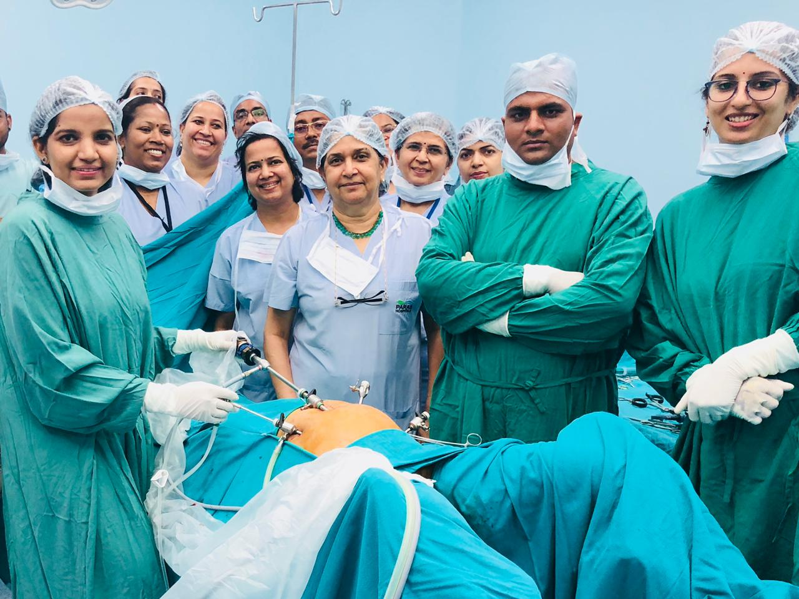
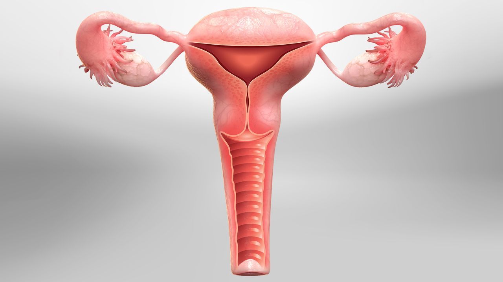
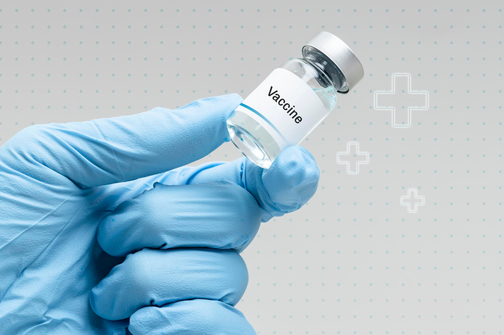

What is Laparoscopy ?
Laparoscopy is a minimally invasive surgical technique used to diagnose and treat various conditions within the abdominal....
Continue read

What is Hysteroscopy ?
Hysteroscopy is a technique to examine the inside of the uterus (the womb) and diagnose or treat various uterine problems.....
Continue readThe Art of Selecting a Top-notch Gynecologist
Many people experience anxiety or nervousness when visiting the gynaecologist as....
Continue read

CERVICAL CANCER VACCINATION
Cervical cancer is the fourth most prevalent cancer in the world (WHO, 2020), and the second most common cancer among women in India.
Continue read